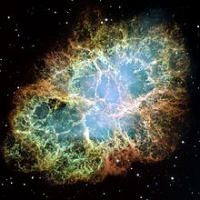

Many of you must have heard about the term "astronomy", or may have even read about it. Well, if you wanted to know about it, then you have come to the right place. So buckle up and get ready to enter the wonderland of astronomy!
Astronomy
(from Greek: ἀστρονομία) is a natural science that studies celestial objects and phenomena. It uses mathematics, physics, and chemistry in order to explain their origin and evolution. Objects of interest include planets, moons, stars, nebulae,
galaxies, and comets. Relevant phenomena include supernova explosions, gamma ray bursts, quasars, blazars, pulsars, and cosmic microwave background radiation. More generally, astronomy studies everything that originates outside Earth's atmosphere.
Cosmology is a branch of astronomy. It studies the Universe as a whole.
 Astronomy is one of the oldest natural sciences. The early civilizations in recorded history made methodical observations of the night sky. These include the Babylonians, Greeks, Indians, Egyptians, Chinese, Maya, and many ancient indigenous
people of the Americas. In the past, astronomy included disciplines as diverse as astrometry, celestial navigation, observational astronomy, and the making of calendars. Nowadays, professional astronomy is often said to be the same as astrophysics.
Professional astronomy is split into observational and theoretical branches. Observational astronomy is focused on acquiring data from observations of astronomical objects. This data is then analyzed using basic principles of physics. Theoretical
astronomy is oriented toward the development of computer or analytical models to describe astronomical objects and phenomena. These two fields complement each other. Theoretical astronomy seeks to explain observational results and observations
are used to confirm theoretical results. Astronomy is one of the few sciences in which amateurs play an active role. This is especially true for the discovery and observation of transient events. Amateur astronomers have helped with many important
discoveries, such as finding new comets.